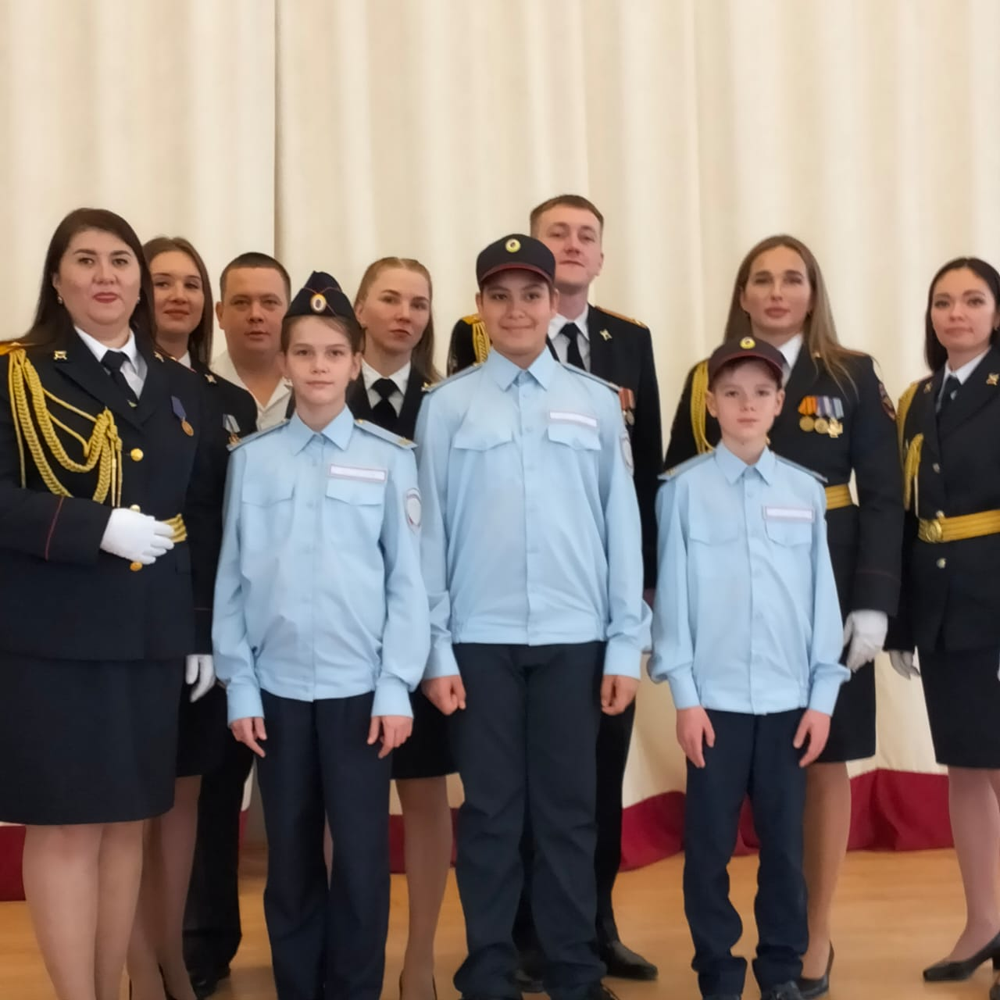

Шут PRODUCTION
Шут PRODUCTION
Немного обо мне
Меня зовут Яша. Я начинающий верстальщик сайтов. Я хочу создать свой исторический проект, а именно сайт в котором будут находиться все исторические знания России. Этот сайт будет доступен всем любителям истории и просто людям, которые хотели бы что-то узнать об истории Росси и не только. Я призёр в олимпиаде по русскому языку и математике, дипломат за 1 место в конкурсе на английском языке, дипломат в чемпионате по 3D моделированию, победитель в эрудит-марафоне, дипломат в конкурсе военно-патриотического творчества, победитель в конкурсе ГУ МВД России «Щит и Лира-Кадеты», победитель в XXV городском турнире «ТЮМка-2024», участник чемпионата «ТЕХНОполис», дипломат в городских соревнованиях по волейболу, победитель в номинации «быстрее, выше, сильнее», победитель в конкурсе чтецов, дипломат Школы устного счёта СОРОБАН, участник Всероссийского конкурса «Мудрый совёнок IV» Я учусь в кадетском классе МВД. Могу писать сайты на заказ.
Поротфолио
По поводу сайтов на заказ писать в вк